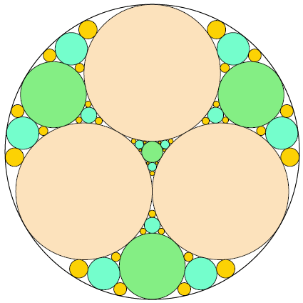

Three circles of equal radius are placed inside a larger circle such that each pair of circles is tangent to one another and the inner circles do not overlap. There are four uncovered "gaps" which are to be filled iteratively with more tangent circles.

At each iteration, a maximally sized circle is placed in each gap, which creates more gaps for the next iteration. After $3$ iterations (pictured), there are $108$ gaps and the fraction of the area which is not covered by circles is $0.06790342$, rounded to eight decimal places.
What fraction of the area is not covered by circles after $10$ iterations?
Give your answer rounded to eight decimal places using the format x.xxxxxxxx .